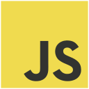
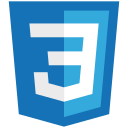
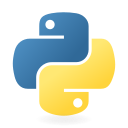
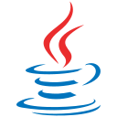
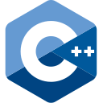
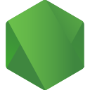
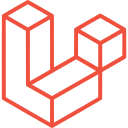
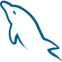
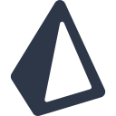
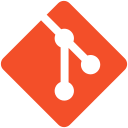

Justin Gerald Loleng
Software Engineer - Full-Stack
- Based in
- Pangasinan, Philippines
- Education
- BS Information Technology graduate, Pangasinan State University
- Focus
- MERN + TypeScript, clean architecture
- Status
- Open to work
Open to work - Pangasinan, PH
Software engineer. I build full-stack web apps, REST APIs and clean, fast interfaces.
Software engineer from the Philippines working across the whole stack: React and TypeScript on the front, Node.js, Express and Prisma on the back. BS IT graduate; most recently project manager and developer of the Coach Module at Suitelifer, which I built and deployed to production.
[01] about
Software Engineer - Full-Stack
Hi, I'm Justin. I turn ideas into working, polished products, from the database schema to the last pixel.
I graduated with a BS in Information Technology from Pangasinan State University (Urdaneta City Campus). At Suitelifer I was the project manager for the Coach Module and built it end to end: React, TypeScript, Tailwind and Zustand on the front, Node.js, Express and Prisma on MySQL in the back, with integration and API tests guarding it. I worked in Agile Scrum alongside senior devs and deployed it myself to testing, staging and production.
Before that I led my capstone team building WebPath, a MERN learning platform where the DeepSeek API generates adaptive learning paths and quizzes. I like clear code, honest reviews and interfaces that feel fast.
Suitelifer - Baguio City
Managed the Coach Module, built it end to end and deployed it to production.
WebPath - Urdaneta City
Led a year-long, AI-assisted MERN learning platform.
Web Development (ETR) - Urdaneta City
Laravel HR app for anonymous pulse surveys and live dashboards.
Pangasinan State University - Urdaneta City Campus
Graduated.
Blessed Angels Achievers Academy
[02] stack
What I reach for, grouped by where it lives. The pink marker means I've shipped it to production.

JavaScriptWebPath, SatisTrack
CSS3Every project
PythonScripts, coursework
JavaCoursework
C++DSA practice
Node.jsSuitelifer, WebPath
LaravelSatisTrack
MySQLSuitelifer, SatisTrack
Prisma ORMSuitelifer
GitEvery project[03] work
Coachees submit coaching acknowledgment forms; coaches and admins get the tools to manage them. I managed the project and built it end to end, from the Prisma schema to the React screens, then deployed it myself through testing, staging and production.
An AI-assisted platform for learning web development: interactive courses, a built-in code playground and automated assessments. The DeepSeek API generates adaptive learning paths, quizzes and feedback.
Visit siteAn HR system for tracking workplace morale through anonymous pulse surveys, with authentication, role-based access and real-time Chart.js dashboards on a secure MySQL schema.
View code[04] contact
Open to Junior Software Engineer and Web Developer roles. The fastest way to reach me is email.